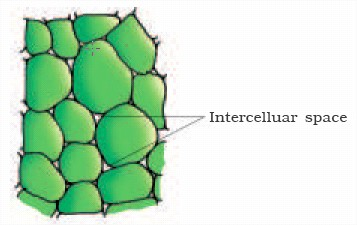
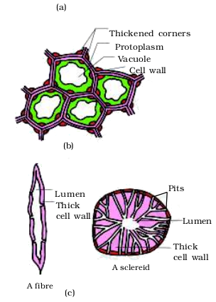
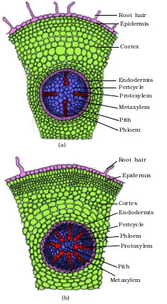
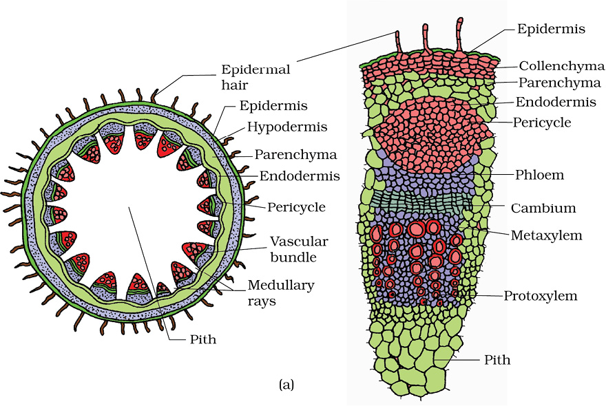

Chapter 6
Anatomy of Flowering Plants
Anatomy of Flowering Plants

6.1 The Tissues
6.2 The Tissue System
6.3 Anatomy of Dicotyledonous and Monocotyledonous Plants
6.4 Secondary Growth
You can very easily see the structural similarities and variations in the external morphology of the larger living organism, both plants and animals. Similarly, if we were to study the internal structure, one also finds several similarities as well as differences. This chapter introduces you to the internal structure and functional organisation of higher plants. Study of internal structure of plants is called anatomy. Plants have cells as the basic unit, cells are organised into tissues and in turn the tissues are organised into organs. Different organs in a plant show differences in their internal structure. Within angiosperms, the monocots and dicots are also seen to be anatomically different. Internal structures also show adaptations to diverse environments.
6.1 The Tissues
A tissue is a group of cells having a common origin and usually performing a common function. A plant is made up of different kinds of tissues. Tissues are classified into two main groups, namely, meristematic and permanent tissues based on whether the cells being formed are capable of dividing or not.
6.1.1 Meristematic Tissues
Growth in plants is largely restricted to specialised regions of active cell division called meristems (Gk. meristos: divided). Plants have different kinds of meristems. The meristems which occur at the tips of roots and shoots and produce primary tissues are called apical meristems (Figure 6.1).
Root apical meristem occupies the tip of a root while the shoot apical meristem occupies the distant most region of the stem axis. During the formation of leaves and elongation of stem, some cells ‘left behind’ from shoot apical meristem, constitute the axillary bud. Such buds are present in the axils of leaves and are capable of forming a branch or a flower. The meristem which occurs between mature tissues is known as intercalary meristem. They occur in grasses and regenerate parts removed by the grazing herbivores. Both apical meristems and intercalary meristems are primary meristems because they appear early in life of a plant and contribute to the formation of the primary plant body.

Figure 6.1 Apical meristem: (a) Root (b) Shoot
The meristem that occurs in the mature regions of roots and shoots of many plants, particularly those that produce woody axis and appear later than primary meristem is called the secondary or lateral meristem. They are cylindrical meristems. Fascicular vascular cambium, interfascicular cambium and cork-cambium are examples of lateral meristems. These are responsible for producing the secondary tissues.
Following divisions of cells in both primary and as well as secondary meristems, the newly formed cells become structurally and functionally specialised and lose the ability to divide. Such cells are termed permanent or mature cells and constitute the permanent tissues. During the formation of the primary plant body, specific regions of the apical meristem produce dermal tissues, ground tissues and vascular tissues.


Figure 6.2 Simple tissues : (a) Parenchyma (b) Collenchyma (c) Sclerenchyma
6.1.2 Permanent Tissues
The cells of the permanent tissues do not generally divide further. Permanent tissues having all cells similar in structure and function are called simple tissues. Permanent tissues having many different types of cells are called complex tissues.
6.1.2.1 Simple Tissues
A simple tissue is made of only one type of cells. The various simple tissues in plants are parenchyma, collenchyma and sclerenchyma (Figure 6.2). Parenchyma forms the major component within organs. The cells of the parenchyma are generally isodiametric. They may be spherical, oval, round, polygonal or elongated in shape. Their walls are thin and made up of cellulose. They may either be closely packed or have small intercellular spaces. The parenchyma performs various functions like photosynthesis, storage, secretion.
The collenchyma occurs in layers below the epidermis in dicotyledonous plants. It is found either as a homogeneous layer or in patches. It consists of cells which are much thickened at the corners due to a deposition of cellulose, hemicellulose and pectin. Collenchymatous cells may be oval, spherical or polygonal and often contain chloroplasts. These cells assimilate food when they contain chloroplasts. Intercellular spaces are absent. They provide mechanical support to the growing parts of the plant such as young stem and petiole of a leaf.
Sclerenchyma consists of long, narrow cells with thick and lignified cell walls having a few or numerous pits. They are usually dead and without protoplasts. On the basis of variation in form, structure, origin and development, sclerenchyma may be either fibres or sclereids. The fibres are thick-walled, elongated and pointed cells, generally occuring in groups, in various parts of the plant. The sclereids are spherical, oval or cylindrical, highly thickened dead cells with very narrow cavities (lumen). These are commonly found in the fruit walls of nuts; pulp of fruits like guava, pear and sapota; seed coats of legumes and leaves of tea. Sclerenchyma provides mechanical support to organs.
6.1.2.2 Complex Tissues
The complex tissues are made of more than one type of cells and these work together as a unit. Xylem and phloem constitute the complex tissues in plants (Figure 6.3).
Xylem functions as a conducting tissue for water and minerals from roots to the stem and leaves. It also provides mechanical strength to the plant parts. It is composed of four different kinds of elements, namely, tracheids, vessels, xylem fibres and xylem parenchyma. Gymnosperms lack vessels in their xylem.Tracheids are elongated or tube like cells with thick and lignified walls and tapering ends. These are dead and are without protoplasm. The inner layers of the cell walls have thickenings which vary in form. In flowering plants, tracheids and vessels are the main water transporting elements. Vessel is a long cylindrical tube-like structure made up of many cells called vessel members, each with lignified walls and a large central cavity. The vessel cells are also devoid of protoplasm. Vessel members are interconnected through perforations in their common walls. The presence of vessels is a characteristic feature of angiosperms.Xylem fibres have highly thickened walls and obliterated central lumens. These may either be septate or aseptate. Xylem parenchyma cells are living and thin-walled, and their cell walls are made up of cellulose. They store food materials in the form of starch or fat, and other substances like tannins. The radial conduction of water takes place by the ray parenchymatous cells.
Primary xylem is of two types – protoxylem and metaxylem. The first formed primary xylem elements are called protoxylem and the later formed primary xylem is called metaxylem. In stems, the protoxylem lies towards the centre (pith) and the metaxylem lies towards the periphery of the organ. This type of primary xylem is called endarch. In roots, the protoxylem lies towards periphery and metaxylem lies towards the centre. Such arrangement of primary xylem is called exarch.
Figure 6.3 (a) Xylem (b) Phloem
Phloem transports food materials, usually from leaves to other parts of the plant. Phloem in angiosperms is composed of sieve tube elements, companion cells, phloem parenchyma and phloem fibres. Gymnosperms have albuminous cells and sieve cells. They lack sieve tubes and companion cells. Sieve tube elements are also long, tube-like structures, arranged longitudinally and are associated with the companion cells. Their end walls are perforated in a sieve-like manner to form the sieve plates. A mature sieve element possesses a peripheral cytoplasm and a large vacuole but lacks a nucleus. The functions of sieve tubes are controlled by the nucleus of companion cells. The companion cells are specialised parenchymatous cells, which are closely associated with sieve tube elements. The sieve tube elements and companion cells are connected by pit fields present between their common longitudinal walls. The companion cells help in maintaining the pressure gradient in the sieve tubes. Phloem parenchyma is made up of elongated, tapering cylindrical cells which have dense cytoplasm and nucleus. The cell wall is composed of cellulose and has pits through which plasmodesmatal connections exist between the cells. The phloem parenchyma stores food material and other substances like resins, latex and mucilage. Phloem parenchyma is absent in most of the monocotyledons. Phloem fibres (bast fibres) are made up of sclerenchymatous cells. These are generally absent in the primary phloem but are found in the secondary phloem. These are much elongated, unbranched and have pointed, needle like apices. The cell wall of phloem fibres is quite thick. At maturity, these fibres lose their protoplasm and become dead. Phloem fibres of jute, flax and hemp are used commercially. The first formed primary phloem consists of narrow sieve tubes and is referred to as protophloem and the later formed phloem has bigger sieve tubes and is referred to as metaphloem.
6.2 The Tissue System
We were discussing types of tissues based on the types of cells present. Let us now consider how tissues vary depending on their location in the plant body. Their structure and function would also be dependent on location. On the basis of their structure and location, there are three types of tissue systems. These are the epidermal tissue system, the ground or fundamental tissue system and the vascular or conducting tissue system.
6.2.1 Epidermal Tissue System
The epidermal tissue system forms the outer-most covering of the whole plant body and comprises epidermal cells, stomata and the epidermal appendages – the trichomes and hairs. The epidermis is the outermost layer of the primary plant body. It is made up of elongated, compactly arranged cells, which form a continuous layer. Epidermis is usually single-layered. Epidermal cells are parenchymatous with a small amount of cytoplasm lining the cell wall and a large vacuole. The outside of the epidermis is often covered with a waxy thick layer called the cuticle which prevents the loss of water. Cuticle is absent in roots. Stomata are structures present in the epidermis of leaves. Stomata regulate the process of transpiration and gaseous exchange. Each stoma is composed of two bean-shaped cells known as guard cells which enclose stomatal pore. In grasses, the guard cells are dumb-bell shaped. The outer walls of guard cells (away from the stomatal pore) are thin and the inner walls (towards the stomatal pore) are highly thickened. The guard cells possess chloroplasts and regulate the opening and closing of stomata. Sometimes, a few epidermal cells, in the vicinity of the guard cells become specialised in their shape and size and are known as subsidiary cells. The stomatal aperture, guard cells and the surrounding subsidiary cells are together called stomatal apparatus (Figure 6.4).
Figure 6.4 Diagrammatic representation: (a) stomata with bean-shaped guard cells (b) stomata with dumb-bell shaped guard cell
The cells of epidermis bear a number of hairs. The root hairs are unicellular elongations of the epidermal cells and help absorb water and minerals from the soil. On the stem the epidermal hairs are called trichomes. The trichomes in the shoot system are usually multicellular. They may be branched or unbranched and soft or stiff. They may even be secretory. The trichomes help in preventing water loss due to transpiration.
6.2.2 The Ground Tissue System
All tissues except epidermis and vascular bundles constitute the ground tissue. It consists of simple tissues such as parenchyma, collenchyma and sclerenchyma. Parenchymatous cells are usually present in cortex, pericycle, pith and medullary rays, in the primary stems and roots. In leaves, the ground tissue consists of thin-walled chloroplast containing cells and is called mesophyll.

6.2.3 The Vascular Tissue System
The vascular system consists of complex tissues, the phloem and the xylem.The xylem and phloem together constitute vascular bundles (Figure 6.5). In dicotyledonous stems, cambium is present between phloem and xylem. Such vascular bundles because of the presence of cambium possess the ability to form secondary xylem and phloem tissues, and hence are called open vascular bundles. In the monocotyledons, the vascular bundles have no cambium present in them. Hence, since they do not form secondary tissues they are referred to as closed. When xylem and phloem within a vascular bundle are arranged in an alternate manner on different radii, the arrangement is called radial such as in roots. In conjoint type of vascular bundles, the xylem and phloem are situated at the same radius of vascular bundles. Such vascular bundles are common in stems and leaves. The conjoint vascular bundles usually have the phloem located only on the outer side of xylem.
6.3 Anatomy of Dicotyledonous and Monocotyledonous Plants
For a better understanding of tissue organisation of roots, stems and leaves, it is convenient to study the transverse sections of the mature zones of these organs.
6.3.1 Dicotyledonous Root
Look at Figure 6.6 (a), it shows the transverse section of the sunflower root. The internal tissue organisation is as follows:
The outermost layer is epidermis. Many of the epidermal cells protrude in the form of unicellular root hairs. The cortex consists of several layers of thin-walled parenchyma cells with intercellular spaces. The innermost layer of the cortex is called endodermis. It comprises a single layer of barrel-shaped cells without any intercellular spaces. The tangential as well as radial walls of the endodermal cells have a deposition of water-impermeable, waxy material-suberin-in the form of casparian strips. Next to endodermis lies a few layers of thick-walled parenchyomatous cells referred to as pericycle. Initiation of lateral roots and vascular cambium during the secondary growth takes place in these cells. The pith is small or inconspicuous. The parenchymatous cells which lie between the xylem and the phloem are called conjuctive tissue. There are usually two to four xylem and phloem patches. Later, a cambium ring develops between the xylem and phloem. All tissues on the innerside of the endodermis such as pericycle, vascular bundles and pith constitute the stele.
6.3.2 Monocotyledonous Root
The anatomy of the monocot root is similar to the dicot root in many respects(Figure 6.6 b). It has epidermis, cortex, endodermis, pericycle, vascular bundles and pith. As compared to the dicot root which have fewer xylem bundles, there are usually more than six (polyarch) xylem bundles in the monocot root. Pith is large and well developed. Monocotyledonous roots do not undergo any secondary growth.

Figure 6.6 T.S. : (a) Dicot root(primary) (b) Monocot root
6.3.3 Dicotyledonous Stem
The transverse section of a typical young dicotyledonous stem shows that theepidermis is the outermost protective layer of the stem (Figure 6.7 a). Covered with a thin layer of cuticle, it may bear trichomes and a few stomata. The cells arranged in multiple layers between epidermis and pericycle constitute the cortex. It consists of three sub-zones. The outer hypodermis, consists of a few layers of collenchymatous cells just below the epidermis, which provide mechanical strength to the young stem. Cortical layers below hypodermis consist of rounded thin walled parenchymatous cells with conspicuous intercellular spaces. The innermost layer of the cortex is called the endodermis. The cells of the endodermis are rich in starch grains and the layer is also referred to as thestarch sheath. Pericycle is present on the inner side of the endodermis and above the phloem in the form of semi-lunar patches of sclerenchyma. In between the vascular bundles there are a few layers of radially placed parenchymatous cells, which constitute medullary rays. A large number of vascular bundles are arranged in a ring ; the ‘ring’ arrangement of vascular bundles is a characteristic of dicot stem. Each vascular bundle is conjoint, open, and with endarch protoxylem. A large number of rounded, parenchymatous cells with large intercellular spaces which occupy the central portion of the stem constitute thepith.

Figure 6.7 T.S. of stem : (a) Dicot (b) Monocot
6.3.4 Monocotyledonous Stem
The monocot stem has a sclerenchymatous hypodermis, a large number of scattered vascular bundles, each surrounded by a sclerenchymatous bundle sheath, and a large, conspicuous parenchymatous ground tissue (Figure 6.7b). Vascular bundles are conjoint and closed. Peripheral vascular bundles are generally smaller than the centrally located ones. The phloem parenchyma is absent, and water-containing cavities are present within the vascular bundles.
6.3.5 Dorsiventral (Dicotyledonous) Leaf
The vertical section of a dorsiventral leaf through the lamina shows three main parts, namely, epidermis, mesophyll and vascular system. The epidermis which covers both the upper surface (adaxial epidermis) and lower surface (abaxial epidermis) of the leaf has a conspicuous cuticle. The abaxial epidermis generally bears more stomata than the adaxial epidermis. The latter may even lack stomata. The tissue between the upper and the lower epidermis is called the mesophyll. Mesophyll, which possesses chloroplasts and carry out photosynthesis, is made up of parenchyma. It has two types of cells – the palisade parenchyma and the spongy parenchyma. The adaxially placed palisade parenchyma is made up of elongated cells, which are arranged vertically and parallel to each other. The oval or round and loosely arranged spongy parenchyma is situated below the palisade cells and extends to the lower epidermis. There are numerous large spaces and air cavities between these cells. Vascular system includes vascular bundles, which can be seen in the veins and the midrib. The size of the vascular bundles are dependent on the size of the veins. The veins vary in thickness in the reticulate venation of the dicot leaves. The vascular bundles are surrounded by a layer of thick walled bundle sheath cells. Look at Figure 6.8 (a) and find the position of xylem in the vascular bundle.
6.3.6 Isobilateral (Monocotyledonous) Leaf
The anatomy of isobilateral leaf is similar to that of the dorsiventral leaf in many ways. It shows the following characteristic differences. In an isobilateral leaf, the stomata are present on both the surfaces of the epidermis; and the mesophyll is not differentiated into palisade and spongy parenchyma (Figure 6.8 b).
In grasses, certain adaxial epidermal cells along the veins modify themselves into large, empty, colourless cells. These are called bulliform cells. When the bulliform cells in the leaves have absorbed water and are turgid, the leaf surface is exposed. When they are flaccid due to water stress, they make the leaves curl inwards to minimise water loss.
The parallel venation in monocot leaves is reflected in the near similar sizes of vascular bundles (except in main veins) as seen in vertical sections of the leaves.

Figure 6.8 T.S. of leaf : (a) Dicot (b) Monocot
6.4 Secondary Growth
The growth of the roots and stems in length with the help of apical meristem is called the primary growth. Apart from primary growth most dicotyledonous plants exhibit an increase in girth. This increase is called the secondary growth. The tissues involved in secondary growth are the two lateral meristems: vascular cambium and cork cambium.
6.4.1 Vascular Cambium
The meristematic layer that is responsible for cutting off vascular tissues – xylem and pholem – is called vascular cambium. In the young stem it is present in patches as a single layer between the xylem and phloem. Later it forms a complete ring.
6.4.1.1 Formation of cambial ring
In dicot stems, the cells of cambium present between primary xylem and primary phloem is the intrafascicular cambium. The cells of medullary rays, adjoining these intrafascicular cambium become meristematic and form the interfascicular cambium. Thus, a continuous ring of cambium is formed.
6.4.1.2 Activity of the cambial ring
The cambial ring becomes active and begins to cut off new cells, both towards the inner and the outer sides. The cells cut off towards pith, mature intosecondary xylem and the cells cut off towards periphery mature into secondary phloem. The cambium is generally more active on the inner side than on the outer. As a result, the amount of secondary xylem produced is more than secondary phloem and soon forms a compact mass. The primary and secondary phloems get gradually crushed due to the continued formation and accumulation of secondary xylem. The primary xylem however remains more or less intact, in or around the centre. At some places, the cambium forms a narrow band of parenchyma, which passes through the secondary xylem and the secondary phloem in the radial directions. These are the secondary medullary rays (Figure 6.9).

Figure 6.9 Secondary growth in a dicot stem (diagrammatic) – stages in transverse views
6.4.1.3 Spring wood and autumn wood
The activity of cambium is under the control of many physiological and environmental factors. In temperate regions, the climatic conditions are not uniform through the year. In the spring season, cambium is very active and produces a large number of xylary elements having vessels with wider cavities. The wood formed during this season is called spring wood or early wood. In winter, the cambium is less active and forms fewer xylary elements that have narrow vessels, and this wood is called autumn wood or late wood.
The spring wood is lighter in colour and has a lower density whereas the autumn wood is darker and has a higher density. The two kinds of woods that appear as alternate concentric rings, constitute an annual ring. Annual rings seen in a cut stem give an estimate of the age of the tree.
6.4.1.4 Heartwood and sapwood
In old trees, the greater part of secondary xylem is dark brown due to deposition of organic compounds like tannins, resins, oils, gums, aromatic substances and essential oils in the central or innermost layers of the stem. These substances make it hard, durable and resistant to the attacks of micro-organisms and insects. This region comprises dead elements with highly lignified walls and is called heartwood. The heartwood does not conduct water but it gives mechanical support to the stem. The peripheral region of the secondary xylem, is lighter in colour and is known as the sapwood. It is involved in the conduction of water and minerals from root to leaf.
6.4.2 Cork Cambium
As the stem continues to increase in girth due to the activity of vascular cambium, the outer cortical and epidermis layers get broken and need to be replaced to provide new protective cell layers. Hence, sooner or later, another meristematic tissue called cork cambium or phellogen develops, usually in the cortex region. Phellogen is a couple of layers thick. It is made of narrow, thin-walled and nearly rectangular cells. Phellogen cuts off cells on both sides. The outer cells differentiate into cork or phellem while the inner cells differentiate into secondary cortex or phelloderm. The cork is impervious to water due to suberin deposition in the cell wall. The cells of secondary cortex are parenchymatous. Phellogen, phellem, and phelloderm are collectively known as periderm. Due to activity of the cork cambium, pressure builds up on the remaining layers peripheral to phellogen and ultimately these layers die and slough off. Bark is a
non-technical term that refers to all tissues exterior to the vascular cambium, therefore including secondary phloem. Bark refers to a number of tissue types, viz., periderm and secondary phloem. Bark that is formed early in the season is called early or soft bark. Towards the end of the season, late or hard bark is formed. Name the various kinds of cell layers which constitute the bark.

(a)
(b)
At certain regions, the phellogen cuts off closely arranged parenchymatous cells on the outer side instead of cork cells. These parenchymatous cells soon rupture the epidermis, forming a lens-shaped openings called lenticels. Lenticels permit the exchange of gases between the outer atmosphere and the internal tissue of the stem. These occur in most woody trees (Figure 6.10).
6.4.3 Secondary Growth in Roots
In the dicot root, the vascular cambium is completely secondary in origin. It originates from the tissue located just below the phloem bundles, a portion of pericycle tissue, above the protoxylem forming a complete and continuous wavy ring, which later becomes circular (Figure 6.11). Further events are similar to those already described above for a dicotyledon stem.
Secondary growth also occurs in stems and roots of gymnosperms. However, secondary growth does not occur in monocotyledons.
Figure 6.11 Different stages of the secondary growth in a typical dicot root
Summary
Anatomically, a plant is made of different kinds of tissues. The plant tissues are broadly classified into meristematic (apical, lateral and intercalary) and permanent (simple and complex). Assimilation of food and its storage, transportation of water, minerals and photosynthates, and mechanical support are the main functions of tissues. There are three types of tissue systems – epidermal, ground and vascular. The epidermal tissue systems are made of epidermal cells, stomata and the epidermal appendages. The ground tissue system forms the main bulk of the plant. It is divided into three zones – cortex, pericycle and pith. The vascular tissue system is formed by the xylem and phloem. On the basis of presence of cambium, location of xylem and phloem, the vascular bundles are of different types. The vascular bundles form the conducting tissue and translocate water, minerals and food material.
Monocotyledonous and dicotyledonous plants show marked variation in their internal structures. They differ in type, number and location of vascular bundles. The secondary growth occurs in most of the dicotyledonous roots and stems and it increases the girth (diameter) of the organs by the activity of the vascular cambium and the cork cambium. The wood is actually a secondary xylem. There are different types of wood on the basis of their composition and time of production.
Exercises
1. State the location and function of different types of meristems.
2. Cork cambium forms tissues that form the cork. Do you agree with this statement? Explain.
3. Explain the process of secondary growth in the stems of woody angiosperms with the help of schematic diagrams. What is its significance?
4. Draw illustrations to bring out the anatomical difference between
(a) Monocot root and Dicot root
(b) Monocot stem and Dicot stem
5. Cut a transverse section of young stem of a plant from your school garden and observe it under the microscope. How would you ascertain whether it is a monocot stem or a dicot stem? Give reasons.
6. The transverse section of a plant material shows the following anatomical features - (a) the vascular bundles are conjoint, scattered and surrounded by a sclerenchymatous bundle sheaths. (b) phloem parenchyma is absent. What will you identify it as?
7. Why are xylem and phloem called complex tissues?
8. What is stomatal apparatus? Explain the structure of stomata with a labelled diagram.
9. Name the three basic tissue systems in the flowering plants. Give the tissue names under each system.
10. How is the study of plant anatomy useful to us?
11, What is periderm? How does periderm formation take place in the dicot stems?
12. Describe the internal structure of a dorsiventral leaf with the help of labelled diagrams.